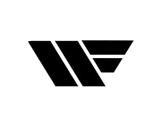

<div id="wrapper"  [ngClass]="toogled ? 'toggled' : ''"> 


    <div id="sidebar-wrapper">
        <ul class="sidebar-nav">
            <li class="sidebar-brand">
                <a routerLink="/calendar">
                   WF Planning
                </a>
            </li>
            <li>
                <a routerLink="/calendar" >Calendar</a>
            </li>
            <li>
                <a routerLink="/lastTask">Waiting Tasks</a>
            </li>
            <li>
                <a href="#">What have i done?</a>
            </li>
            <li>
                <a href="#"></a>
            </li>
            <li>
                <a href="#">Stats</a>
            </li>
            <li>
                <a  (click)="logOut()">Exit</a>
            </li>
          
           
          
        </ul>
    </div>
     
     
    

  
    <div id="page-content-wrapper">
        <div class="container-fluid">
            <div class="row">
                <div class="col-lg-12">
                    <router-outlet></router-outlet>
       
                </div>
            </div>
        </div>
    </div>
    

</div>
